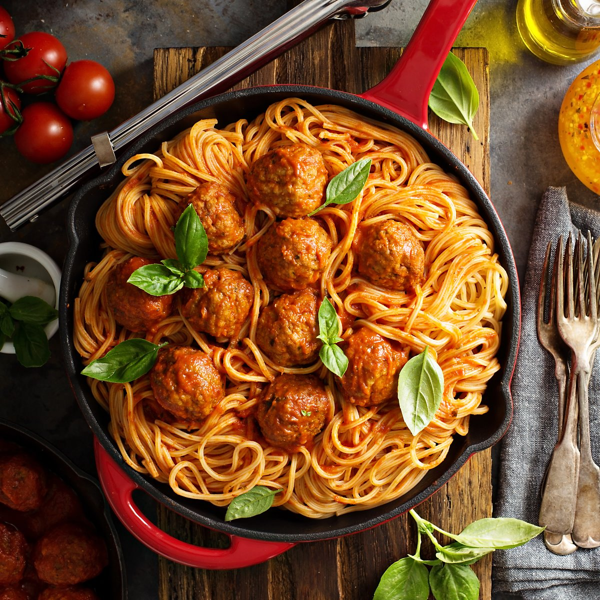

소스종류
토마토소스 
볼로네제
걸쭉한 토마토소스. 불로네즈는 이탈리아 볼로냐 지방에서 처음 만들어져 그 지명에서 이름이 붙여졌으며, 흔히 라구소스 혹은 미트소스라 불린다.
볼로네즈는 다진 고기, 양파, 토마토퓌레 등을 넣어 오랜 시간 뭉근히 끓여 만드는 것이 특징이다.
시간을 들일수록 깊은 맛이 나며, 진한 고기의 풍미가 가득한 소스다.
아마트리치아나(Amatriciana)
아마트리체 지방의 전통 파스타 소스. 아마트리치아나는 아마트리체 지역에서 처음 유래된 것으로 토마토소스에 구안찰레 생햄과 페코리노 치즈, 마늘을 넣어 맛을 낸다.
수분이 거의 없고 퍽퍽한 스타일로 페페론치노를 넣어 살짝 매콤한 맛이 특징이다.